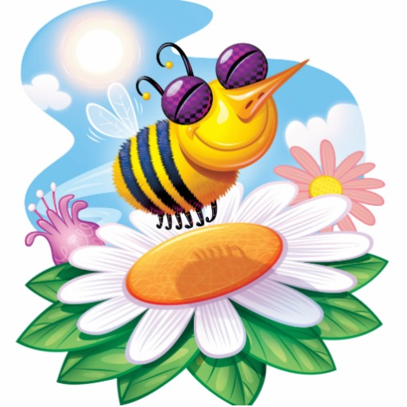
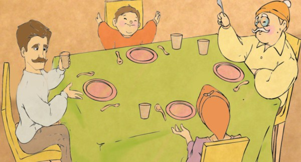

Sıcak bir yaz günüydü. Her yer çiçeklerle dolu ve hava mis gibi kokuyordu. Çiçek tarlasının üzerinde arı vız vız diyerek neşeli neşeli uçuyordu. Havada o kadar güzel süzülüyordu ki papatya onu hayranlıkla izledi. Uçmaktan yorulan arı papatyanın yanındaki ağaç dalına konar. Papatya, arı ile konuşmak ister ve seslenir:
– Arı kardeş ne kadar güzel uçuyorsun. Oysa benim kanatlarım yok ve ben senin gibi dünyadaki güzellikleri göremiyorum. Sadece etrafımdaki çiçekleri görüyorum. Bir gün beni de alıp gezdirebilir misin? der.
Arı papatyaya kibirli gözlerle bakar ve:
 – Ben seni nasıl taşıyım. Seni asla alıp, taşıyamam. Çabucak yorulurum, Hem ne yapacaksın dünyadaki güzellikleri, diyerek papatyayı götürmek istemez ve uçarak gözden kaybolur. Bu duruma oldukça üzülen papatya günlerce ağlar ve kendisine kibirli davranan arı onu çok üzmüştür. Aslında papatyayı alıp, gezdirebilirdi. Fakat o kibirli davranarak onu küçümsemeyi tercih etti.
Aradan aylar geçti ve havalar yavaş yavaş soğudu. Ağaçlar yaprak döküyor ve çiçekler soluyordu. Fakat papatya halen yapraklarını dökmemişti. O gün havada arıyı uçarken görür ve bal yapmak için çiçek aradığını fark eder. Oysa oradaki solmadan kalan tek çiçek papatyaydı. Papatyanın üzerine konmak ister ve papatya arının konmasına izin vermez. Bu duruma oldukça şaşıran arı papatyaya seslenir:
– Neden konmama izin vermiyorsun. Bal yapmam gerek.” der. Papatya aylar önce kendisine kibirli davranan arının yaptıklarını ona hatırlatır. Durumu hatırlayan arı kendine çok kızar ve papatyadan özür diler. Kendisinin kibri yüzünden geri çevirdiği papatyaya, şimdi kendi muhtaç olmuştu. Arının yaptıklarını affeden papatya, arının bal yapmasına izin verir ve bu duruma sevinen arı papatyayı alarak dünyayı gezdirmek için havalanmaya başlarlar.
Bilge Dede iyice yaşlanmıştı. Gözleri görmüyor, kulakları iyi işitmiyordu. Yemeğini bile yemekte zorlanıyordu. Üstüne başına döküyor, sofrayı kirletiyordu. Bu yüzden gelini ve oğlu Bilge Dede’ye kızıyorlardı, iyi davranmıyorlardı. Evde onu tek seven, küçük torunu Selim idi. Selim, dedesine acıyor, babasıyla annesinin davranışlarına çok kızıyordu.
Bir akşam yemek yiyeceklerdi. Dede, ekmeğe uzanayım derken, kolu tabağına takıldı ve tabağını yere düşürdü. Örtüler kirlendi. Tabak kırıldı. Gelini kızdı, bağırdı. Bilge Dede, odasına çekildi. Karnı çok açtı ama yiyecek hali kalmamıştı. Ağlıyordu… Allah’a yalvarmaya başladı. “Allah’ım canımı alda kurtulayım, oğluma ve gelinime daha fazla yük olmak istemiyorum”
 Ertesi gün Selim’in babası eve elinde tahta çanak ve kaşıklarla geldi. Bilge Dede’yi evin bahçesindeki kulübeye taşıdılar. Artık burada kalacak yemeklerini de burada bu tahta çanak ve kaşıklarla yiyecekti. Selim buna çok üzüldü. “Neden böyle yapıyorlardı” ki? Bir gün gelecek, onlar da yaşlanacaklardı. Onların da eli ayağı tutmaz olacaktı. Bunu annesine, babasına nasıl anlatmalıydı?
Yağmurlu bir gündü. Selim’in annesi babası evdeydi. İşe gitmemişlerdi. Selim, birkaç tahta parçası getirdi. Bir bıçakla onları kesmeye, oymaya başladı. Bir yandan da annesine, babasına bakıyordu. Annesi ve babası merak ettiler. Selim bu tahtalarla ne yapıyordu? Annesi Ali’ye sordu:
-Bu tahtalarla ne yapıyorsun Selim?
-Tahta çanaklar yapıyorum.
-Tahta çanakları ne yapacaksın?
-Sizin için!
-Bizim için mi?
-Evet sizin için.
İksinin de yüzü kıpkırmızı oldu, söyleyecek tek kelime bulamadılar. Yaptıklarından pişman oldular. Bilge Dede’nin yanına varıp ondan özür dilediler. Bilge Dede’yi tekrar yanlarına alarak onu bağırlarına bastılar. Ve bir arada mutlu mesut yaşadılar.